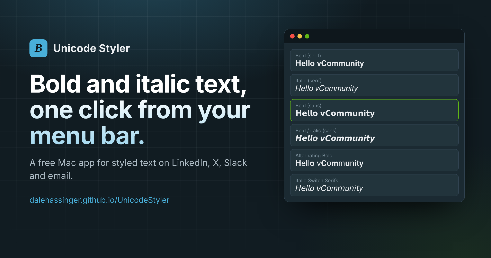
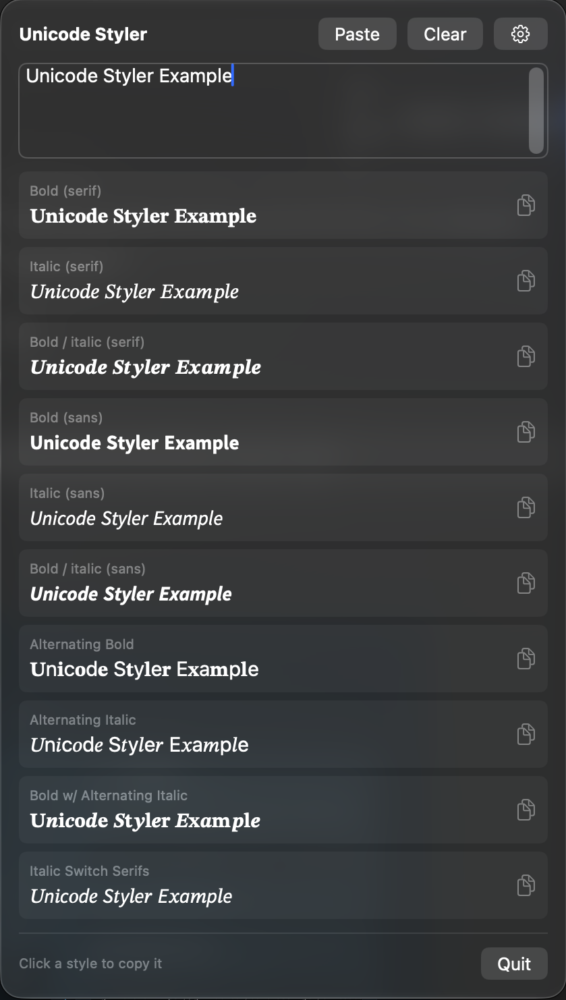
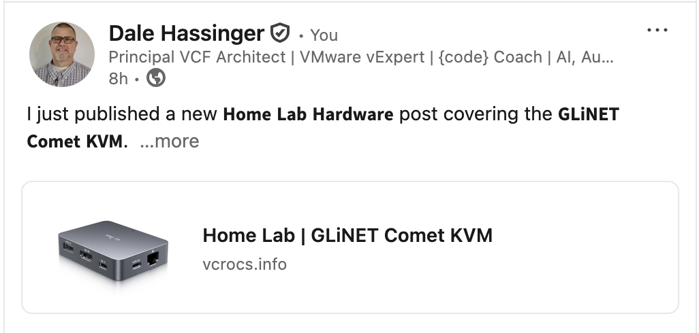
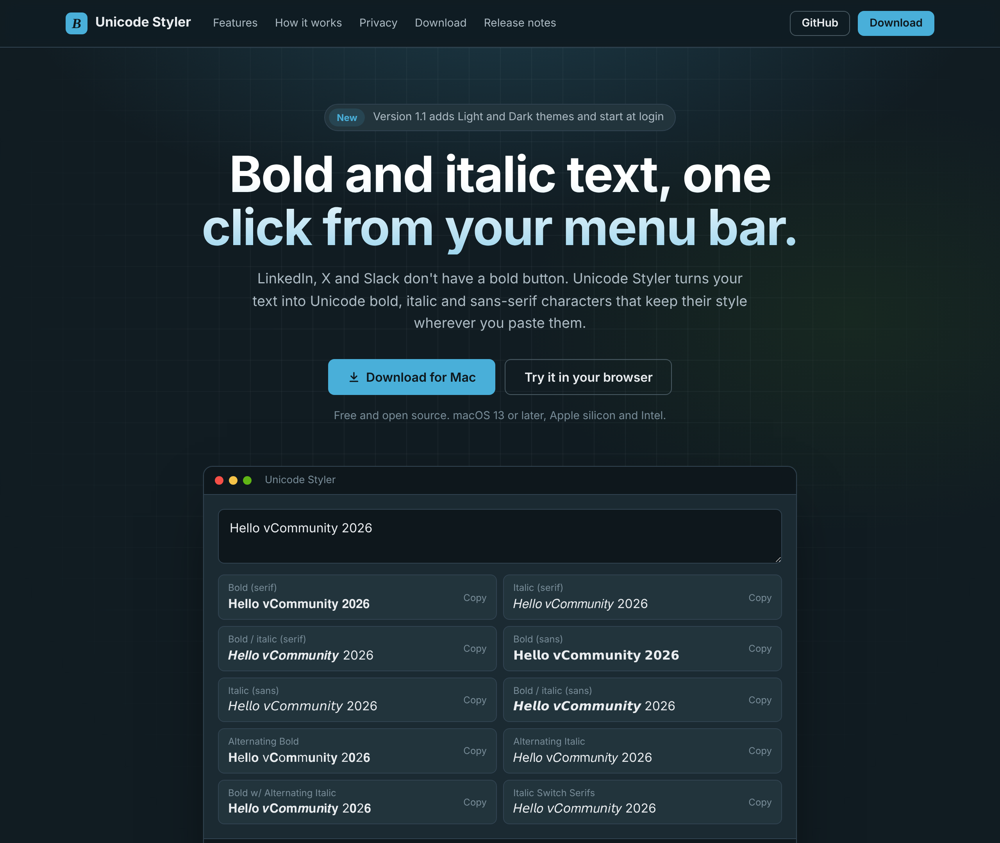
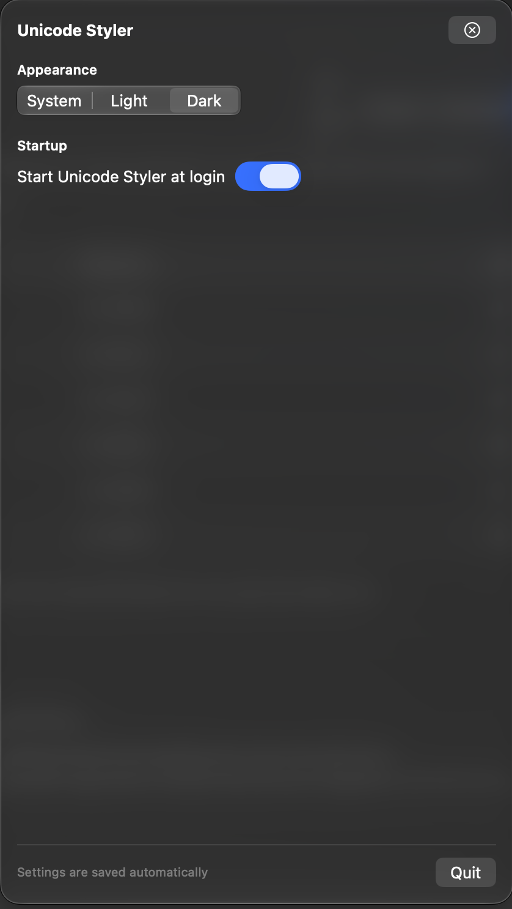
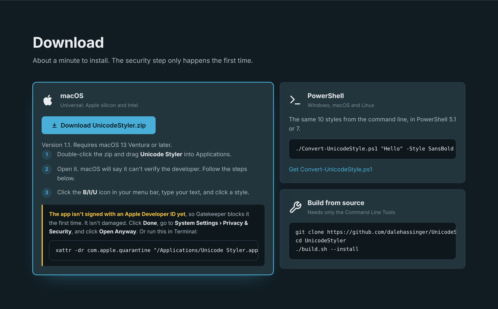

Unicode Styler | Bold and Italic Text for LinkedIn from the Mac Menu Bar

Unicode Styler: Bold and Italic Text for My LinkedIn Posts, One Click from the Menu Bar 🚀
Every time I publish a blog post, I write a LinkedIn post to announce it. LinkedIn doesn't have a bold or italic button. If you want a headline to stand out in the feed, the trick is Unicode characters that look bold or italic. I was using a web page, YayText, to convert my text, then copying it back into LinkedIn.
It works. But it was a browser tab I had to find every time, with ads, for something I do several times a week. I asked Claude how I could duplicate what that web page does as a local app. It started as a PowerShell script, then became a small native Mac menu bar app. I'm sharing it with the vCommunity.
What is Unicode Styler? 💡
Unicode Styler is a free macOS menu bar app that turns plain text into styled text you can paste anywhere:
- Bold, italic and bold italic, in serif and sans-serif
- Four alternating patterns (Alternating Bold, Alternating Italic, Bold w/ Alternating Italic, Italic Switch Serifs)
- All 10 styles shown at once, with a live preview as you type
- Click any style to copy it
- Light, Dark or System appearance
- Optional start at login
It works offline and sends nothing anywhere.
Unicode Styler (Screen Shot):

How I Use It for LinkedIn Posts 📝
LinkedIn only shows the first two or three lines of a post before …see more. That opening line has to do the work. Here is my routine:
1. Write the post as plain text first
2. Click the B/I/U icon in the menu bar
3. Type the first line, click Bold (sans), and paste it over the plain line in LinkedIn
4. Do the same for the short section labels in the body
5. Leave everything else as plain text
Bold (sans) is my go-to on LinkedIn. It matches LinkedIn's own font better than the serif styles.
Here is what a styled announcement looks like:
I just published a new 𝗛𝗼𝗺𝗲 𝗟𝗮𝗯 𝗛𝗮𝗿𝗱𝘄𝗮𝗿𝗲 post covering the 𝗚𝗟𝗶𝗡𝗘𝗧 𝗖𝗼𝗺𝗲𝘁 𝗞𝗩𝗠.
I have been using these for remote console access to my Home Lab ESX hosts, and they have worked very well with my Starlink and Twingate setup. 🛰️ Copy and Paste into LinkedIn (Screen Shot):

A few rules I follow:
- Style the hook and the labels, not the whole post. A full post in bold is hard to read and looks like shouting.
- Don't style hashtags.
#𝘃𝗘𝘅𝗽𝗲𝗿𝘁is not the same hashtag as#vExpert, so it won't be found. - Keep names and product names plain when you want people to find the post in search.
It works the same way in X, Slack, Teams, Bluesky and email.
The Website 🌐
The app has its own page: https://dalehassinger.github.io/UnicodeStyler
You can try all 10 styles right on the page before downloading anything. Type in the box and click a style to copy it. The page also has the download, install steps, how it works, and release notes.
Unicode Styler Website (Screen Shot):

How It Works 🔧
The styled text isn't formatting. These are different characters.
Unicode has a block called Mathematical Alphanumeric Symbols (U+1D400 to U+1D7FF). It was added for writing math, and it contains complete A to Z alphabets in bold, italic, sans-serif and more. Each alphabet starts at a fixed code point, so converting a letter is one addition:
styled letter = start of the style + (letter − A)
| Style | Starts at | Example |
|---|---|---|
| Bold | U+1D400 | 𝐀𝐁𝐂 |
| Italic | U+1D434 | 𝐴𝐵𝐶 |
| Bold italic | U+1D468 | 𝑨𝑩𝑪 |
| Sans bold | U+1D5D4 | 𝗔𝗕𝗖 |
| Sans italic | U+1D608 | 𝘈𝘉𝘊 |
| Sans bold italic | U+1D63C | 𝘼𝘽𝘾 |
Because they are real characters, the styling survives copy and paste into any app that takes text.
Settings ⚙️
The gear icon in the top right of the panel opens Settings.
- Appearance | System, Light or Dark. Your choice is saved and applied every time the app starts.
- Start at login | One switch adds the app to macOS Login Items. macOS may ask you to approve it the first time. If it does, the panel shows an Open Login Items… button that takes you there.
Settings (Screen Shot):

Gotchas ⚠️
- Italic h lives somewhere else.
- Unicode already had ℎ as the Planck constant (U+210E), so the italic alphabet has a gap where lowercase h should be. Without a special case you get an empty box. The app maps it separately.
- Italic styles have no digits.
- Bold has its own 𝟎 to 𝟗. Italic doesn't, so numbers stay plain in italic styles.
- Screen readers and search.
- Screen readers may read these characters one at a time or as math symbols, and search won't match 𝐁𝐨𝐥𝐝 to Bold. Another reason to use it for emphasis only.
- The Command Line Tools can't compile SwiftUI's
@State.- On newer macOS SDKs,
@Stateis a macro whose plugin only ships with full Xcode. My first build failed withplugin for module 'SwiftUIMacros' not found. The app now uses anObservableObjectinstead, so it builds with just the Command Line Tools.
- On newer macOS SDKs,
Wish List | How Did I Do? ✅
- ✅ All 10 styles from the web page
- ✅ Click to copy with a confirmation checkmark
- ✅ Light, Dark and System appearance
- ✅ Start at login
- ✅ Universal app for Apple silicon and Intel
- ✅ Project website with a live demo
- ⏳ Signed and notarized with an Apple Developer ID
- ⏳ A keyboard shortcut to open the panel
It's a simple app, but it does exactly what I wanted.
Try It 🔗
1. Go to https://dalehassinger.github.io/UnicodeStyler
2. Click Download for Mac and unzip UnicodeStyler.zip
3. Drag Unicode Styler into your Applications folder
4. Open it, then look for the B/I/U icon in your menu bar
The app is not signed with an Apple Developer ID yet, so your Mac will warn you the first time. It isn't damaged.
On macOS, if you see "Apple could not verify Unicode Styler":
1. Click Done
2. Go to System Settings › Privacy & Security
3. Scroll down and click Open Anyway
Or remove the download flag from Terminal:
xattr -dr com.apple.quarantine "/Applications/Unicode Styler.app"You only do this once.
Download (Screen Shot):

Doesn't This Already Exist?
It does. YayText and other sites do this well, and YayText gave me the idea. I wanted it local, offline and one click away in my menu bar.
For the Techies 🤓
- One Swift file, under 350 lines, using SwiftUI's
MenuBarExtra - No Xcode project. A
build.shscript compiles withswiftc, builds the.appbundle andInfo.plist, and makes a universal binary withlipo - Start at login uses Apple's
SMAppService(macOS 13 and later) - The website is a single HTML page on GitHub Pages, and the live demo uses the same character mapping as the app
- There's also a PowerShell version,
Convert-UnicodeStyle.ps1, in the repo for Windows and Linux users - Built with Claude, starting from "How could I duplicate what this web page does as a local app?"
- Source: https://github.com/dalehassinger/UnicodeStyler
Build it yourself:
git clone https://github.com/dalehassinger/UnicodeStyler.git
cd UnicodeStyler
./build.sh --installI always appreciate feedback. Let me know what you like, and what you would add next. See you in the vCommunity!